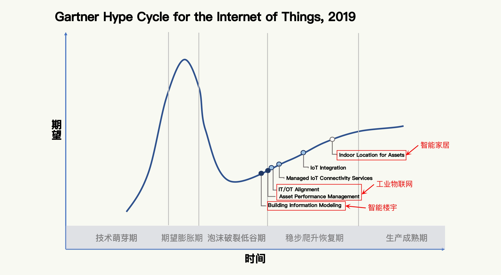
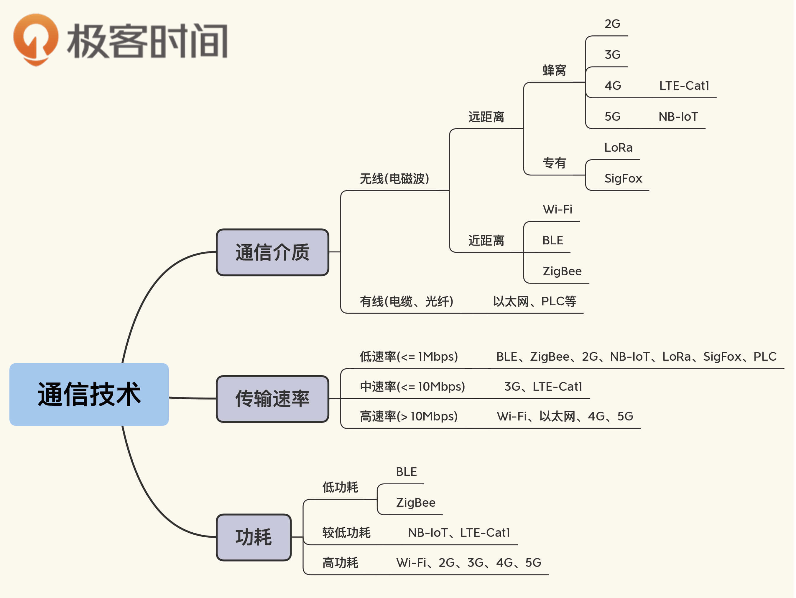
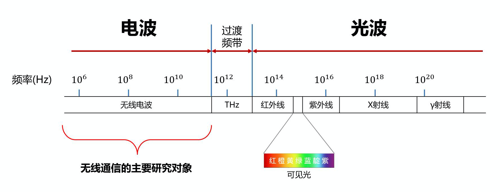
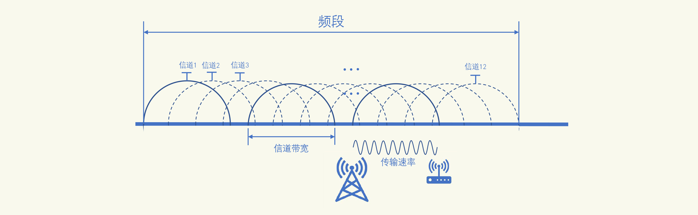
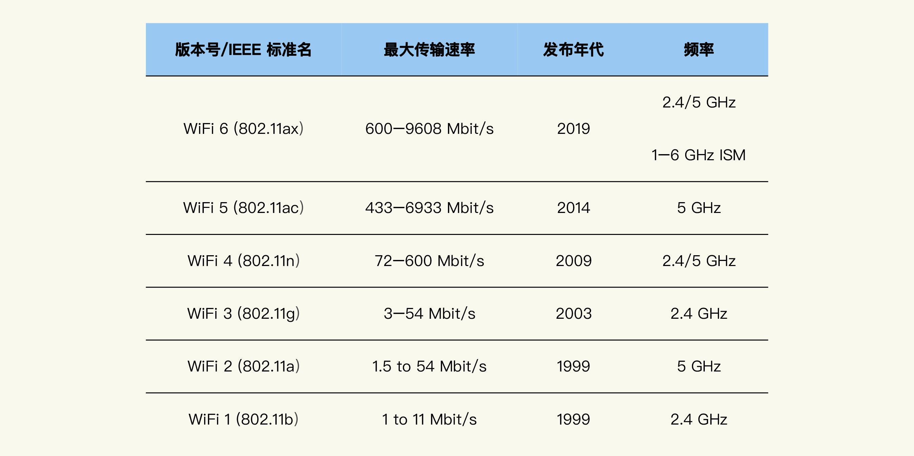
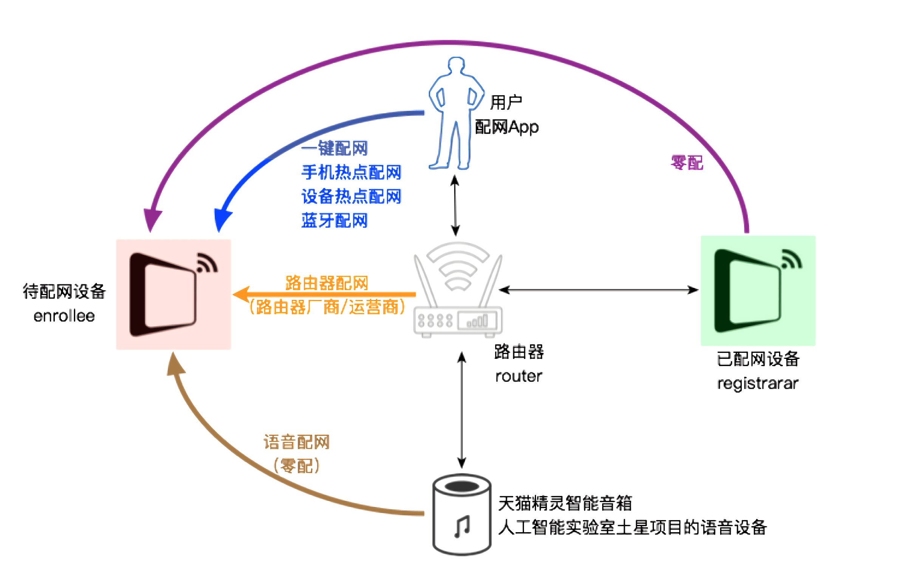
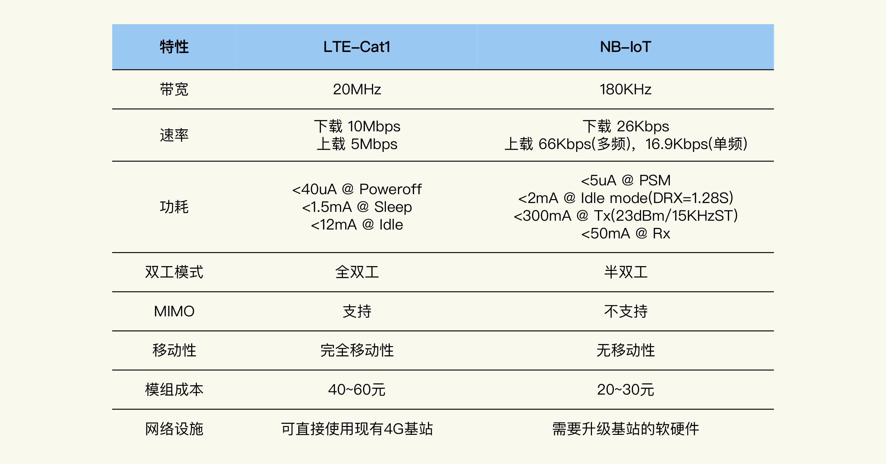
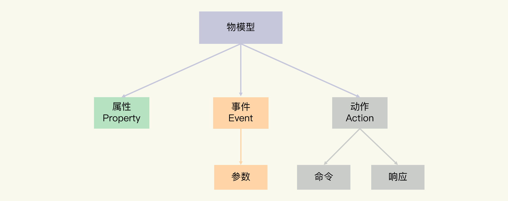

目录
常用¶
智能家居: http://www.aiforward.com
智慧社区中后台技术解决方案的，AIot。 包含智能家居联动，社区安防系统，智慧物业管理SaaS平台，智慧通行产品等， 有自持的物业管理公司，与大型地产及物业公司有良好的战略合作关系 1. 物业服务 2. 全屋智能 3. 智慧社区
关键词:
互联网，传感器，5G，云计算，MQTT，大数据，人工智能，智能家居
工业 4.0
MQTT 协议，就是 IBM 在 20 世纪 90 年代，为了监测偏远地区的石油和天然气管道而开发的
蜂窝网络技术:
NB-IoT、LTE-Cat1
非蜂窝技术:
Wi-Fi、BLE、LoRa
5G:
uRLLC 和 mMTC
三层:
设备层:
传感器和通信技术（5G）
Wi-Fi、2G(GPRS)、3G、4G、LTE-Cat1、NB-IoT
LoRa、SigFox
NFC、蓝牙(BLE)
网络层:
平台接入有关的 MQTT 协议
应用层:
云计算的大数据存储、处理，以及智能家居等领域的应用
Gartner报道:
2015 年发布的一个报告，说物联网处于期望膨胀的巅峰；
2019 年，发布的报告，就会看到智能家居、工业物联网和智能楼宇这些细分的领域，正在从恢复期走向成熟期

Gartner 2019 年物联网技术成熟曲线¶
设备层¶

设备层思维导图¶
无线通信技术的 4 个重要参数:
1. 频段
Wi-Fi 的频段是 2.412GHz-2.484GHz(非授权频段)
蓝牙技术也基本是这个频率范围，所以Wi-Fi 和蓝牙在某些情况下会相互干扰
解决的一个有效的方法是基于信道的跳频技术
2. 信道
定义: 它是信息通过无线电波传送的具体通道介质。每种通信技术的频段会被划分、规划成多个信道来使用
Wi-Fi 的频段被分为 14 个信道（中国可用的是 13 个信道，信道 14 排除在外）
注意: 相邻信道的频段是存在重叠的。比如:
Wi-Fi 的信道 1 频段是 2.401GHz～2.423GHz，
信道 2 频段是 2.406GHz～2.428GHz
3. 信道带宽
定义: 信道频段的最大值和最小值之差，就是信道覆盖的范围大小
Wi-Fi 信道 1 的带宽是 22MHz，它是由 2.423GHz 减去 2.401GHz 得到的
22MHz 是信道 1 的实际带宽，而它的有效带宽只有 20MHz
因为其中有 2MHz 是隔离频带, 隔离频带主要是起保护作用的
4. 传输速率
传输速率受很多因素的影响，比如信道带宽和频率
一般来说:
带宽越大，传输速率就越大
频率比较高时，电磁环境相对比较干净、干扰少，传输速率会更高
其他技术:
正交频分复用、MIMO（Multiple-Input Multiple-Output）技术

整个频谱的频段分布¶

无线通信技术的 4 个概念¶
Wi-Fi¶
Wi-Fi 智能设备:
频段是 2.412GHz-2.484GHz(非授权频段)
14 个信道
Wi-Fi 是 IEEE 802.11 无线网络标准的商品名
其中，802.11b、802.11g、802.11n 就是 Wi-Fi 的不同版本
Wi-Fi 配网技术:
一键配网技术（SmartConfig）、设备热点配网
零配置配网、蓝牙配网、手机热点配网和路由器配网
一键配网技术（SmartConfig）
工作原理:
是通过手机或 Wi-Fi 路由器发送 UDP 广播包的形式，将 Wi-Fi 的 SSID 和密码广播出去。
步骤1:
Wi-Fi 设备在进入配网模式后，会将接收到的广播包进行解析
从而获取到 Wi-Fi 的 SSID 和密码，然后连接上路由器
步骤2:
同样地，Wi-Fi 设备连接上路由器后，也会广播自己的 MAC 地址
这样手机 App 就可以接收到设备的 MAC 地址完成绑定

Wi-Fi 联盟从 2018 年开始推进数字版本号¶

各种配网技术中角色之间的关系¶
蓝牙¶
BLE:
非授权的 2.400GHz-2.4835GHz，采用 40 个带宽 2MHz 的通道
Bluetooth 4.0 / 4.1 / 4.2 的统称
成为低功耗物联网设备的首选，仅仅依靠一颗纽扣电池供电就可以工作数年
数据通信主要基于广播包和 GATT 协议
连接参数的调节对于 BLE 设备的扫描和连接等影响很大。这些参数包括:
广播间隔、最大连接间隔、最小连接间隔和连接监听时间
蓝牙 5:
针对物联网增加了很多特性，比如:
1. Mesh 组网
2. 更远的通信距离
3. 更快传输速率（BLE 4.2 的 2 倍）
4. 更大数据承载量的广播包（BLE 4.2 的 8 倍）
5. 此外还有厘米级精度的定位功能
蜂窝通信技术¶
2G:
尽量避免使用 2G 模组，因为 2G 的退网已经不可避免
LTE-Cat1:
属于 4G 网络的低速类别
相比2G&NB-IoT贵一些，但是也要远低于 4G 模组的价格
带宽是 20MHz，上行速率 5Mbps，下行速率 10Mbps
有良好的移动特性，功耗比 NB-IoT 大些，但是低于传统的 2G/3G 设备
适合可穿戴设备、ATM 机、自助售货机和无人机等场景。
这些场景对数据传输速率有一定要求，但是又不需要达到 4G 的水平。
NB-IoT:
网络覆盖仍然不够理想
大概率会成为 5G 的重要组成部分
带宽是 180KHz，上行速率 16.9Kbps，下行速率是 26Kbps
功耗很低
不适合移动环境，但却很适合智能抄表、智能灯杆和烟感报警器等低数据速率的场景

LTE-Cat1 和 NB-IoT 对比图¶
网络协议¶
通信模式:
1. 发布 - 订阅
2. 请求 - 响应
物联网的网络通信特点:
1. 物联网设备很大可能工作在不可靠、高延迟的网络环境中
2. 物联网系统中，设备数量多，而且交互非常复杂
3. 设备经常需要根据实际使用环境做增加、减少等调整
因为这些特点，物联网系统在选择网络通信的协议时，一般采用发布 - 订阅的通信模式
MQTT（MQ Telemetry Transport）协议，是 IBM 公司在 1999 年开发的轻量级网络协议，它有三个主要特点:
1. 采用二进制的消息内容编码格式，所以二进制数据、JSON 和图片等负载内容都可以方便传输。
2. 协议头很紧凑，协议交互也简单，保证了网络传输流量很小。
3. 支持 3 种 QoS（Quality of Service，服务质量）级别，便于应用根据不同的场景需求灵活选择。
MQTT 协议非常适合计算能力有限、网络带宽低、信号不稳定的远程设备，
所以它成为了物联网系统事实上的网络协议标准
ThingsBoard - Open-source IoT Platform: https://thingsboard.io/
数据分析¶
物联网系统的价值其实就在于数据的价值，而数据的价值则来源于我们对数据的分析和应用。
数据处理:
1. 批处理
2. 流处理
数据产生价值的方法:
1. 可视化
2. 挖掘
3. 预测
4. 控制决策
实例¶
智能家居的发展的三个阶段:
1. 遥控
在遥控阶段，每次跟设备的交互都需要人的参与
2. 场景联动
在场景联动阶段，人只需要参与一次跟设备的交互就行
3. 智能化
家居系统会从你之前的交互中和其他设备收集的数据中学习你的行为模式和喜好，
然后控制设备自动处理很多事情，包括提供决策建议。
围绕生活场景来设计智能家居产品的 3 个原则:
1. 专注单一领域，解决一个问题
问题容易定义，解决方案涉及的技术也就比较少。
比如智能照明，解决电灯的联网和开闭功能就可以了
2. 闭环，也就是同时包含传感器、执行器和控制器
设备自身就可以实现一定程度的自动化。
比如根据光照自动调节灯光就是一个完整的闭环
3. 可以实现
4 个产品场景:
1. 可以手机控制的智能电灯
2. 可以基于光线自动调节的智能电灯
3. 可以语音控制的智能音箱
4. 可以基于环境温湿度和土壤湿度自动浇水的浇花器
物模型¶
三种功能元素:
1. 属性Property
属性的特点是可读可写
2. 事件Event
由产品设备在运行过程中产生的信息、告警和故障等
3. 动作Action
也被称作服务（Service）
动作由应用下发给设备，设备可以返回结果给应用

六种数据类型:
1. 布尔型（Bool）
非真即假的二值型变量。例如，开关功能只有开、关两种状态
2. 整数型（Int）
可用于线性调节的整数变量。例如，电灯的亮度是一个整数范围
3. 字符串型（String）
以字符串形式表达的功能点。例如，灯的位置
4. 浮点型（Float）
精度为浮点型的功能点。例如，电压值的范围是 0.0 - 24.0
5. 枚举型（Enum）
自定义的有限集合值。例如，灯的颜色有白色、红色、黄色等
6. 时间型（Timestamp）
String 类型的 UTC 时间戳
属性-智能电灯的开关属性:
{
"id": "power_switch", // 属性的唯一标识
"name": "电灯开关", // 名称
"desc": "控制电灯开灭", // 属性的详细描述
"required": true, // 表示此属性是否必需包含，是
"mode": "rw", // 属性的模式，r 代表读，w 代表写
"define": { // 属性的数值定义
"type": "bool", // 数值的类型，布尔
"mapping": { // 具体数值的含义
"0": "关", //0 表示灯关闭
"1": "开" //1 表示灯打开
}
}
}
事件-智能电灯的电压:
{
"id": "low_voltage", // 事件唯一标识
"name": "LowVoltage", // 事件名称
"desc": "Alert for device voltage is low", // 事件的描述
"type": "alert", // 事件的类型，告警
"required": false, // 表示此属性是否必需包含，否
"params": [ // 事件的参数
{
"id": "voltage", // 事件参数的唯一标识
"name": "Voltage", // 事件参数的名称
"desc": "Current voltage", // 参数的描述
"define": { // 参数的数值定义
"type": "float", // 数值类型，浮点数
"unit": "V", // 数值的单位，伏
"step": "1", // 数值变化的步长，1
"min": "0.0", // 数值的最小值
"max": "24.0", // 数值的最大值
"start": "1" // 事件的起始值
}
}
]
}
继承的具体特征是:
1. 子模型继承父模型的所有要素，且继承的元素无法被修改
2. 子模型可以再被继承，支持多层的继承关系
3. 子模型可以创建独立的要素，但子模型中新增的要素不可以和所有上级父模型中的元素重名
4. 当父模型中的元素发生变更时，子模型中继承自父模型的元素同步变更，保持与父模型一致
{
"version": "1.0", // 模型版本
"properties": [ // 属性列表
{
"id": "power_switch", // 电灯开关属性
"name": "电灯开关",
"desc": "控制电灯开灭",
"required": true,
"mode": "rw",
"define": {
"type": "bool",
"mapping": {
"0": "关",
"1": "开"
}
}
},
{
"id": "brightness", // 亮度属性
"name": "亮度",
"desc": "灯光亮度",
"mode": "rw",
"define": {
"type": "int",
"unit": "%",
"step": "1",
"min": "0",
"max": "100",
"start": "1"
}
},
{
"id": "color", // 电灯颜色属性
"name": "颜色",
"desc": "灯光颜色",
"mode": "rw",
"define": {
"type": "enum",
"mapping": {
"0": "Red",
"1": "Green",
"2": "Blue"
}
}
},
{
"id": "color_temp", // 色温属性
"name": "色温",
"desc": "灯光冷暖",
"mode": "rw",
"define": {
"type": "int",
"min": "0",
"max": "100",
"start": "0",
"step": "10",
"unit": "%"
}
}
],
"events": [ // 事件列表
{
"id": "status_report", // 运行状态报告
"name": "DeviceStatus",
"desc": "Report the device status",
"type": "info",
"required": false,
"params": [ // 事件参数列表
{
"id": "status",
"name": "running_state",
"desc": "Report current device running state",
"define": {
"type": "bool",
"mapping": {
"0": "normal",
"1": "fault"
}
}
},
{
"id": "message",
"name": "Message",
"desc": "Some extra message",
"define": {
"type": "string",
"min": "0",
"max": "64"
}
}
]
},
{
"id": "low_voltage", // 低电压告警事件
"name": "LowVoltage",
"desc": "Alert for device voltage is low",
"type": "alert",
"required": false,
"params": [
{
"id": "voltage",
"name": "Voltage",
"desc": "Current voltage",
"define": {
"type": "float",
"unit": "V",
"step": "1",
"min": "0.0",
"max": "24.0",
"start": "1"
}
}
]
},
{
"id": "hardware_fault", // 硬件错误事件
"name": "Hardware_fault",
"desc": "Report hardware fault",
"type": "fault",
"required": false,
"params": [
{
"id": "name",
"name": "Name",
"desc": "Name like: memory,tf card, censors ...",
"define": {
"type": "string",
"min": "0",
"max": "64"
}
},
{
"id": "error_code",
"name": "Error_Code",
"desc": "Error code for fault",
"define": {
"type": "int",
"unit": "",
"step": "1",
"min": "0",
"max": "2000",
"start": "1"
}
}
]
}
],
"actions": [], // 动作列表
"profile": { // 产品参数
"ProductId": "8D1GQLE4VA", // 产品 ID
"CategoryId": "141" // 产品分类编号
}
}
设备影子¶
Note
设备影子用于缓存设备状态。应用程序可以通过设备影子直接获取设备最后一次更新的属性值，而无需每次都访问设备。设备在线时，可以直接获取应用指令；设备离线后，再次上线可以主动拉取应用指令。
本质-应用程序和设备的解耦:
使用设备影子机制，设备只需要主动同步状态给设备影子一次，
多个应用程序请求设备影子获取设备状态，即可获取设备最新状态，做到应用程序和设备的解耦。
数字孪生¶
Note
物模型是物理实体的数字化模型，但主要针对的是物联网中应用的开发和设备的互操作。
特斯拉公司为其生产的每一辆电动汽车都建立了数字孪生模型，相关的模型数据保存在公司的数据库中，以便在测试中排查故障，为用户提供更好的服务。
零配置组网¶
UPnP 协议
mDNS 和 DNS-SD 协议:
苹果设备的 AirDrop 功能是通过 Bonjour 服务来发现网络上的其他苹果设备的。 这个 Bonjour 服务就是 mDNS 协议和 DNS-SD 协议的具体实现。 DNS-SD使用三种 DNS 协议的记录类型来定义协议内容，三个记录分别是：PTR 记录、SRV 记录和 TXT 记录
小米有 Mibeacon 协议
AllJoyn 协议¶
由高通公司主导的高创新中心（Qualcomm Innovation Center）的开源项目开发的，主要用于近距离无线传输，通过 WiFi 或蓝牙技术，定位和点对点文件传输。该项目在 2012 公开。
AllJoyn 是一个合作的开源软件框架，程序员可以很方便的编写出搜索附近设备的应用应用程序，
并且无论对方的品牌、类别、系统都可以在不需要云环境的情况下连接。
AllJoyn 框架是非常灵活，能使物联网实现愿景。